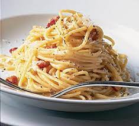

Carbonara

Description
Carbonara is an Italian pasta dish from Rome made with egg, hard cheese, cured pork, and black pepper. The dish arrived at its modern form, with its current name, in the middle of the 20th century.
Ingredients
- Spaghetti
- Eggs
- Salt
- Pepper
- Butter
- Guanciale
- Pecorino Romano
- Black Pepper
Steps
- Boil water in a pot
- Add salt to the water
- Add pasta to the pot
- Drain pasta from the pot
- Mix eggs, cheese, and pepper in a bowl
- Add butter and guanciale to a pan
- Fry till brown
- Add pasta and mix
- Add egg mixture and mix